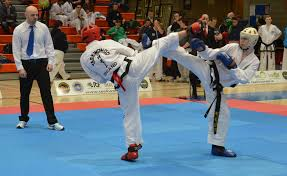

Introducción
El taekwondo es una de las artes marciales más practicadas en el mundo. Conocido por sus espectaculares patadas, su disciplina y sus valores éticos, este arte marcial coreano tiene una historia rica y compleja que combina elementos tradicionales con influencias modernas. Este artículo explora el origen del taekwondo y presenta al hombre que se considera su creador: el General Choi Hong Hi.
¿Qué es el Taekwondo?
El taekwondo (태권도) es un arte marcial de origen coreano cuyo nombre se traduce como “el camino del pie y el puño”. Esta disciplina se caracteriza por técnicas de patadas rápidas y altas, golpes de puño, bloqueos y movimientos defensivos. Además de su aspecto físico, el taekwondo también promueve valores como el respeto, la cortesía, la perseverancia, el autocontrol y el espíritu indomable. Desde el año 2000, el taekwondo forma parte del programa oficial de los Juegos Olímpicos, consolidándose como un deporte
Orígenes históricos
El taekwondo moderno es el resultado de una evolución que comenzó siglos atrás en Corea. Dos de las influencias más importantes fueron:
- Taekkyeon: un antiguo arte marcial coreano que se enfocaba en patadas fluidas y técnicas circulares.
- Hwa Rang Do: sistema de combate practicado por los Hwarang, una élite de jóvenes guerreros del reino de
Taekkyeon
Hwa Rang Do
El creador del Taekwondo: General Choi Hong Hi
El principal responsable de la creación y formalización del taekwondo moderno fue el General Choi Hong Hi.
Biografía breve
- Nacimiento: 9 de noviembre de 1918, en Corea.
- Formación marcial: Desde joven estudió taekkyeon y más tarde karate mientras vivía en Japón.
- Carrera militar: Como general del ejército surcoreano, entrenó a soldados en técnicas de combate y comenzó a desarrollar su propio sistema marcial.
Aportaciones clave
En 1955, Choi propuso oficialmente el nombre “taekwondo” como un símbolo de identidad nacional coreana. Su visión fue unificar las diferentes escuelas en una sola arte marcial estandarizada que representara la cultura y la filosofía coreana. En 1966, fundó la International Taekwon-Do Federation (ITF), con la cual promovió internacionalmente su estilo de taekwondo. Choi también diseñó los tuls, o formas, que son secuencias coreografiadas de movimientos que representan principios de combate y filosofía.
Evolución y divisiones
Con el tiempo, el taekwondo se dividió en dos ramas principales:
- ITF (International Taekwon-Do Federation): sigue las enseñanzas originales de Choi Hong Hi y pone énfasis en la técnica tradicional y la filosofía.
- WTF (World Taekwondo, antes WTF): orientado al deporte competitivo y al taekwondo olímpico, con diferencias en reglas, técnicas y formas (poomsae).
ITF
WTF
Conclusión
El taekwondo es mucho más que un deporte o un arte marcial; es una expresión de cultura, disciplina y filosofía coreana. Su creador, el General Choi Hong Hi, desempeñó un papel fundamental en su desarrollo y expansión. Gracias a su visión, hoy millones de personas en todo el mundo practican taekwondo, fortaleciendo no solo su cuerpo, sino también su mente y su espíritu.